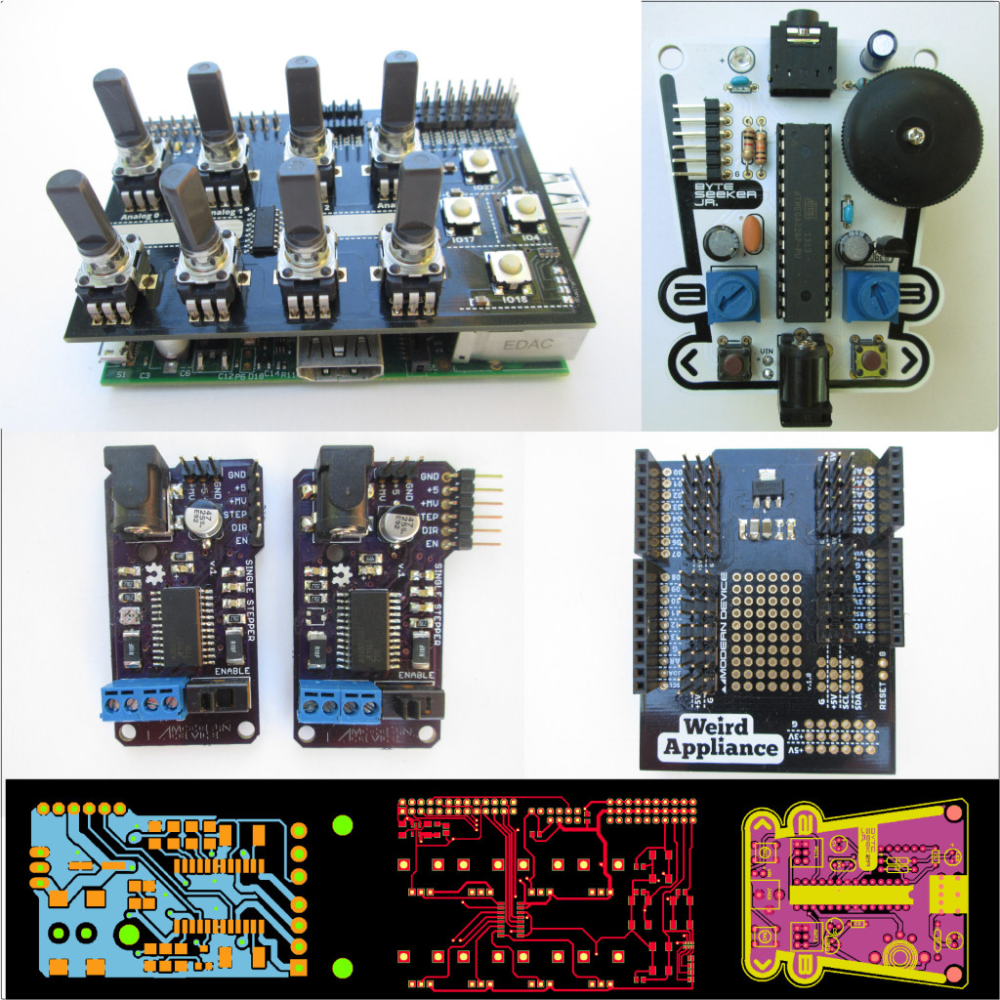
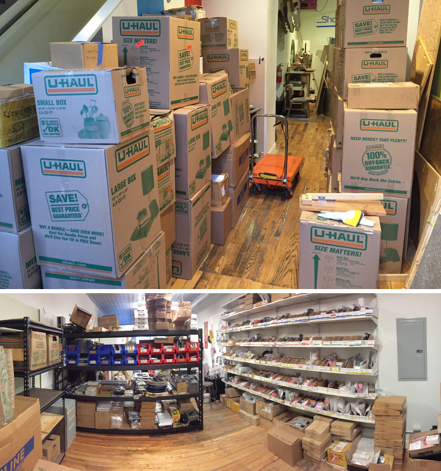

Modern Device is an open hardware company specializing in microcontrollers, sensors, and prototyping tools that make it easy for artists and other hobbyists to get into electronics.
Paul Badger started Modern Device to fill the electronics needs of his classes at RISD. Modern Device came out of working with design students, looking at the problems they faced in class and building kits that made it cheaper and easier to work with electronics. He started kitting in his basement in 2007 and moved to a 500 sq ft commercial space at the Steel Yard in 2010. Modern Device grew out of that space and moved to the Hope Artiste Village in 2012.

Visit Modern Device